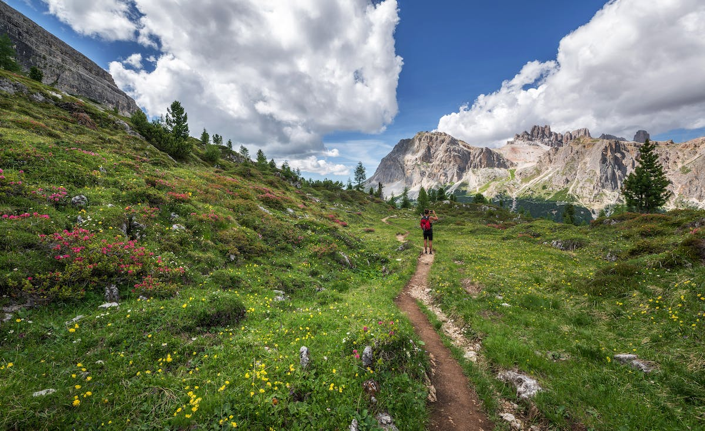

Glacier National Park
Glacier National Park is one of the most beautiful places I have ever seen in the United States. I have only been once and I look forward to going back. I stayed ten days and it was not enough. The first 3 days we were there we did day hikes and it was amazing. We had the pleasure of seeing moose, black bears, grizzly bears, long horn sheep and many more wonderful things. Next we spent 5 nights backpacking across the park. The nights are amazing. There is a reason they call it big sky country.
Highly Recommended Day Hikes - Glacier
There are over 100 hiking trails in Glacier National Park. While I have not had the pleasure of hiking all of them I did have the please of hiking around 10 of them. In total I hiked over 100 miles in my short time there. Some are definitely better than others. Below is a list of my top four trails that I hiked and you could hike in one day. The milage ranges from 8 to 12 miles per trail. May seem like long trails but trust me it will be well worth your time.